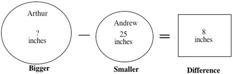

About the MAPSS Project
Overview
Our study targets students’ learning of word problem solving, which is of great importance in elementary school mathematics instruction. Solving word problems is challenging for many students, especially students who struggle in mathematics. Although students may have learned to find answers when solving word problems, there is evidence from state, national, and international assessments that many students do not understand the procedures that they use and cannot monitor their problem solving, both of which can lead to difficulties in solving novel problems.
Our instructional approach has two components: schema-based instruction (SBI) and “think-alouds.” Schema-based instruction focuses students’ attention on the essential role of the mathematical structure of problems. We highlight problem structure through the use of schemas, which are essentially diagrams (see below) that help the learner categorize various problem types and focus on critical problem features to determine the most appropriate strategy for solving a problem. Our instructional approach also teaches students to monitor their cognitive thought processes via “think alouds” and focuses attention on comprehending the problem, representing the problem, planning to solve the problem, and reflecting on the solution. A problem solving heuristic or plan provides guidance and structure for approaching unfamiliar problems.
Problem: Arthur’s brother, Andrew, is 25 inches tall. He is 8 inches shorter than Arthur. How tall is Arthur?

Interventions
Below is a description of Project MAPSS small group tutoring interventions that we are investigating in our research.
- Schema-based instruction (SBI): The following features characterize SBI. Specifically, SBI
- Uses schema training to help students see the underlying mathematical structure of word problems through the use of schematic diagrams (e.g., Change, Group, Compare).
- Focuses on procedural knowledge (e.g., the number family) for solving the problem.
- Emphasizes metacognitive strategy knowledge by having students monitor their cognitive thought processes (i.e., problem solving behavior) to focus on comprehending the problem, representing the problem using a diagram, planning to solve the problem using appropriate solution strategy, and reflecting on the solution via the use of “think-alouds.”
- Comparison treatment: The treatment is derived from the district-adopted curriculum, Investigations and emphasizes the
content from the Number and Operation strand.
Specifically, the intervention.
- Emphasizes procedural flexibility by teaching several addition and subtraction strategies to allow students to develop their understanding of addition and subtraction operations and concepts, and to identify efficient strategies that make sense to them.
- Provides opportunities to apply the learned strategies within the context of word problems.
- Uses a variety of materials (e.g., 100s chart, number line) to support their learning.
- Both tutoring interventions include the following features:
- Problem-based mathematics: Instruction that uses word problems for both learning and practicing skills. Word problems help students make connections between real world contexts and the mathematical operations they are learning in school.
- Direct instruction: An alternative to the student-directed/discovery approach that is characterized by explicit instruction and active student participation.
Project MAPSS Timeline
YEAR ONE:
Tested the effectiveness of the two tutoring interventions with about 150 students with MD in the Minneapolis Public Schools to improve student learning.
Evaluated the effectiveness of the two tutoring interventions on the retention of problem solving skills.
YEAR TWO:
Test the efficacy of the tutoring interventions with a new cohort of 3rd grade students with MD in the Minneapolis Public Schools.